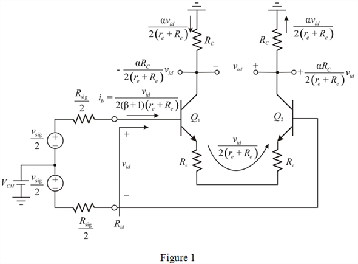

Write the expression for base current, .

Write the expression for input resistance,  .
.
Refer to Figure P8.57 in the textbook.
Draw the modified differential amplifier circuit.

Write the expression for base current, .
Write the expression for input resistance, .
Apply Kirchhoff’s voltage law to left side loop in Figure 1.
Thus, the gain for left side circuit is, .
The differential output voltage is,
Thus, the gain for right side circuit is, .
Calculate the expression for overall differential voltage gain.
Thus, the overall differential voltage gain, is .
Substitute for .
Thus, the expression for overall differential voltage gain when is .
Calculate the expression for overall differential voltage gain in terms of  .
.
Substitute for  .
.
Consider the expression for overall differential voltage gain when  is doubled.
is doubled.
Calculate the ratio of two gain expressions.
Calculate the percentage increase in  when
when  is doubled.
is doubled.

Thus, the factor of is increased by .